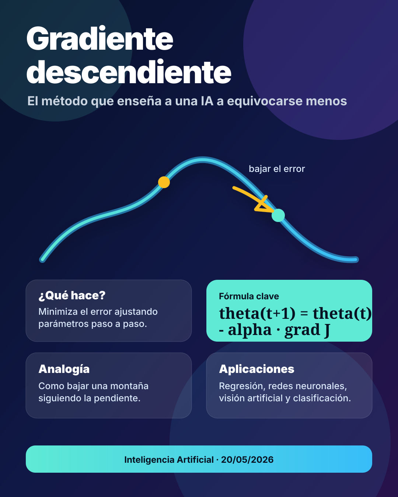

¿Qué es el gradiente descendiente?
El gradiente descendiente es un algoritmo de optimización utilizado para encontrar el valor mínimo de una función. En Inteligencia Artificial se usa principalmente para entrenar modelos, porque permite ajustar sus parámetros hasta que el error sea cada vez menor.
En palabras sencillas: un modelo de IA aprende comparando lo que predice con la respuesta correcta. Si se equivoca, calcula hacia dónde debe mover sus parámetros para reducir ese error. Ese movimiento se realiza muchas veces, de forma iterativa, hasta mejorar el resultado.
Función de pérdida
Es la función que mide el error del modelo. Si la pérdida es alta, el modelo está prediciendo mal; si es baja, el modelo está aprendiendo.
Gradiente
Es un vector que indica la dirección en la que la función aumenta más rápido. Para minimizar el error, el algoritmo se mueve en la dirección contraria.
Explicación didáctica
Imagina que estás en una montaña con neblina
No puedes ver todo el paisaje, pero quieres llegar al punto más bajo. Entonces das pequeños pasos hacia la zona donde el terreno baja más. Después vuelves a mirar la inclinación y das otro paso. Repites el proceso hasta llegar a una zona donde ya casi no bajas más.
Eso mismo hace el gradiente descendiente: no conoce desde el inicio la mejor solución, pero avanza poco a poco usando la pendiente de la función.
Fórmula principal
La actualización de los parámetros se representa así:
θ
Representa los parámetros del modelo, por ejemplo los pesos de una red neuronal o los coeficientes de una regresión.
α
Es la tasa de aprendizaje. Controla qué tan grandes son los pasos que da el algoritmo.
∇J(θ)
Es el gradiente de la función de pérdida. Indica hacia dónde crece más rápido el error.
¿Cómo funciona paso a paso?
Se inicializan los parámetros
El modelo empieza con valores iniciales, muchas veces aleatorios.
El modelo hace una predicción
Usa los datos de entrada para generar una salida estimada.
Se calcula el error
Se compara la predicción con el valor real mediante una función de pérdida.
Se calcula el gradiente
El algoritmo identifica cómo cambiar cada parámetro para reducir el error.
Se actualizan los parámetros
Los parámetros se mueven en dirección contraria al gradiente.
Se repite el proceso
El ciclo continúa hasta que el error sea suficientemente bajo o hasta cumplir un número máximo de iteraciones.
¿Cómo se utiliza en Inteligencia Artificial?
En IA, muchos modelos aprenden ajustando parámetros. El gradiente descendiente permite encontrar una combinación de parámetros que reduzca la diferencia entre lo que el modelo predice y lo que debería predecir.
Redes neuronales
Ajusta los pesos de las neuronas para mejorar tareas como clasificación de imágenes, reconocimiento de voz o predicción de datos.
Regresión lineal
Encuentra la recta que mejor representa una relación entre variables, reduciendo el error entre valores reales y estimados.
Procesamiento de lenguaje
Ayuda a entrenar modelos que clasifican textos, traducen, resumen o reconocen patrones en el lenguaje.
Visión artificial
Permite entrenar modelos capaces de detectar objetos, segmentar imágenes o reconocer patrones visuales.
Ejemplos relacionados con su aplicación
Ejemplo 1: predecir precios
Un modelo intenta predecir el precio de una vivienda. Si se equivoca, el gradiente descendiente ajusta los pesos asociados a variables como área, ubicación o número de habitaciones.
Ejemplo 2: clasificar correos
Un sistema aprende a diferenciar entre correos normales y spam. Cada error ayuda a modificar los parámetros del modelo para mejorar la clasificación.
Ejemplo 3: reconocer imágenes
Una red neuronal aprende a identificar gatos, perros o vehículos. El algoritmo ajusta millones de pesos internos hasta reducir la pérdida del modelo.
Ejemplo 4: análisis geoespacial con IA
En modelos aplicados a imágenes satelitales, el gradiente descendiente puede ayudar a entrenar redes que clasifican coberturas, detectan cambios o identifican patrones territoriales.
Variantes del gradiente descendiente
Batch Gradient Descent
Usa todos los datos para calcular cada actualización. Es estable, pero puede ser lento con bases de datos grandes.
Stochastic Gradient Descent
Actualiza los parámetros usando un solo dato a la vez. Es más rápido, pero puede ser más inestable.
Mini-Batch Gradient Descent
Usa pequeños grupos de datos. Es una de las formas más usadas en redes neuronales porque equilibra velocidad y estabilidad.
Errores comunes al usarlo
Tasa de aprendizaje muy alta: el algoritmo puede saltarse el mínimo y no converger.
Tasa de aprendizaje muy baja: el aprendizaje puede ser demasiado lento.
Mínimos locales: en funciones complejas, el algoritmo puede llegar a una solución buena, pero no necesariamente a la mejor de todas.
Mapa mental del concepto
Minimizar una función de pérdida.
El gradiente indica la dirección del cambio.
Se avanza en sentido contrario al gradiente.
La tasa de aprendizaje controla el tamaño del paso.
Entrenar modelos ajustando pesos y reduciendo errores.
Redes neuronales, regresión, clasificación y visión artificial.
Afiche del tema
Este afiche resume visualmente la idea principal: el modelo aprende reduciendo el error mediante pequeños pasos guiados por el gradiente.

Conclusión
El gradiente descendiente es una herramienta fundamental en Inteligencia Artificial porque permite que los modelos aprendan de sus errores. Su importancia está en que convierte el aprendizaje en un proceso matemático: medir el error, calcular la dirección de mejora, ajustar parámetros y repetir hasta obtener mejores resultados.